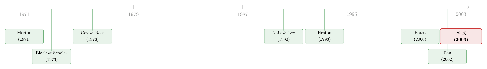

股票是一份「打包套餐」，期权才是那把拆包的刀
本文读的是 Liu & Pan (2003, Journal of Financial Economics)：当股票收益里同时藏着 随机波动率 (stochastic volatility) 和 价格跳跃 (price jumps) 时，光靠股票和债券是不够的——股票把三种风险「捆绑销售」给你，而期权能把这份套餐拆开，让你单独地买卖「波动」、单独地对冲「跳跃」。论文把这个动态最优投资问题求出了闭式解，并校准到标普 500，发现引入衍生品后，一个风险厌恶系数为 3 的投资者，确定性等价财富每年提升约 14%。
1 一个被学术界长期回避的问题
先抛一个看似不该成立的反差。
衍生品交易，按论文开篇引用的话说，是「当今世界第一大生意」，日均成交额超过 2.5 万亿美元。可是,翻开学术界研究 动态资产配置 (dynamic asset allocation) 的文献,你会发现一件奇怪的事:几乎所有人都把衍生品排除在投资组合之外。研究的对象永远是「股票 + 债券」,期权仿佛不存在。
为什么会这样?答案其实很「正当」。在一个 完全市场 (complete market) 里,期权是 冗余 (redundant) 的——Black and Scholes (1973)、Cox and Ross (1976) 早就证明了,期权的收益完全可以用「连续地交易股票 + 债券」复制出来。既然能复制,那它就不提供任何新东西,放不放进组合里都一样。把它扔掉,毫无损失。
但真正的市场是完全的吗?显然不是。一旦市场不完全——要么因为你没法连续交易,要么因为收益里有股票本身张不开的额外风险来源——把期权扔掉就不再是最优的了。
于是一个自然的问题浮出水面:如果一个投资者不仅能配置股票和债券,还能配置股票上的衍生品,他的最优动态策略到底长什么样?引入衍生品,究竟能带来多大的好处?
这正是 Liu 和 Pan 要回答的问题。而他们给出的答案,可以浓缩成一句极其形象的话:股票卖给你的,是一份「打包套餐」;而期权,是那把能把套餐拆开的刀。
2 「打包套餐」到底打包了什么
要理解这把刀,得先看清这份套餐里有几样菜。
论文给股票价格 \(S\) 设定了如下的动态——这是全文的地基,值得逐项看清楚:
$$dS_t = \big(r + \eta V_t + m(\lambda - \lambda^Q)V_t\big)S_t\,dt + \sqrt{V_t}\,S_t\,dB_t + mS_{t-}\big(dN_t - \lambda V_t\,dt\big)$$
$$dV_t = \kappa(\bar v - V_t)\,dt + \sigma\sqrt{V_t}\big(\rho\,dB_t + \sqrt{1-\rho^2}\,dZ_t\big)$$
这两行里,藏着三种互相独立的风险冲击:
- \(B\):寻常的 扩散性价格冲击 (diffusive price shock),就是 Black-Scholes 世界里那个布朗运动;
- \(Z\):波动率风险 (volatility risk)。注意 \(V_t\) 本身是随机的——它是 Heston (1993) 式的随机方差过程,有长期均值 \(\bar v\)、均值回复速度 \(\kappa\)、波动的波动 \(\sigma\)。\(\rho\) 把价格冲击 \(B\) 也牵进了波动率方程,这就是数据里著名的「价跌波升」杠杆效应;
- \(N\):跳跃风险 (jump risk),一个纯跳过程,到达强度是 \(\lambda V_t\)——市场越动荡,跳得越频繁(这是 Bates (2000) 的设定)。一旦跳,股价就乘上一个常数倍 \(m > -1\)。
现在关键的一步来了。问:手里只攥着股票,你对这三种风险的暴露是多少?
把股票的动态拆开看:它在 \(B\) 上有一单位暴露(那个 \(\sqrt{V_t}\,dB_t\)),在 \(N\) 上也有暴露(那个跳跃项),但在 \(Z\) 上完全没有——股票价格的方程里压根没有 \(dZ\)。
这就是「打包套餐」的含义:股票强行把「扩散风险」和「跳跃风险」按 1:1 绑在一起卖给你,而且一口波动率风险都不给你。 你想多要点跳跃、少要点扩散?不行,捆死的。你想单独押注波动率会涨?对不起,这道菜根本不在套餐里。
论文特意强调:不是随便什么金融合约都能当「拆包刀」。债券衍生品只能给你短期利率的暴露(在本模型里短期利率是常数,等于没用);个股的线性组合也几乎不可能单独张开这三种「市场层面」的风险。能拆包的,恰恰是写在总指数上的非线性期权。
3 期权这把刀,怎么拆包
接着,论文给每一份衍生品 \(O^{(i)} = g^{(i)}(S, V)\) 算出了它的动态。我们不必抄那一长串,只需记住三个灵敏度:
- \(g_s\):期权价格对股价的敏感度(就是 Delta);
- \(g_v\):期权价格对波动率的敏感度(就是 Vega);
- \(\Delta g\):股价每跳一次,期权价格的变化。
于是拆包的逻辑变得无比清晰:
平值期权 (at-the-money option) 的 Vega 很大(\(g_v > 0\)),它给你波动率的暴露; 深度虚值看跌期权 (deep out-of-the-money put) 对负向跳跃远比对扩散敏感(\(|\Delta g / \Delta S| \gg |g_s|\)),它帮你把跳跃风险从扩散风险里剥离出来。
这就是整篇论文的灵魂:你想要哪道菜,就用对应的期权去单点。三种风险,至少要三个证券(股票 + 两个不同的期权)才能把市场补全。论文把这件事形式化成一个 非冗余条件 (non-redundancy condition)——只要所选的两个衍生品满足
$$\Delta = \left(\frac{\Delta g^{(1)}}{mO^{(1)}} - \frac{g^{(1)}_s S}{O^{(1)}} \frac{g^{(2)}_v}{O^{(2)}}\right) - \left(\frac{\Delta g^{(2)}}{mO^{(2)}} - \frac{g^{(2)}_s S}{O^{(2)}} \frac{g^{(1)}_v}{O^{(1)}}\right) \neq 0$$
市场就被补全了,投资者就能自由地在三种风险上「单点」。
但是——这里有个绕不开的代价。市场不完全,意味着这些期权的定价不唯一。光看股票的风险收益信息,你根本定不出「波动率风险该值多少钱」「跳跃和扩散的相对价格是多少」。所以论文必须额外指定一个 定价核 (pricing kernel):
$$d\pi_t = -\pi_t\Big(r\,dt + \eta\sqrt{V_t}\,dB_t + \xi\sqrt{V_t}\,dZ_t\Big) + \left(\frac{\lambda^Q}{\lambda} - 1\right)\pi_{t-}\big(dN_t - \lambda V_t\,dt\big)$$
三个常数参数,各管一种风险的价格:\(\eta\) 是扩散风险溢价,\(\xi\) 是波动率风险溢价,\(\lambda^Q/\lambda\) 是跳跃风险溢价。这种「三个旋钮分别拧」的灵活性,在数据里是有支撑的——Pan (2002)、Bakshi and Kapadia (2003) 等一系列研究都发现,期权市场里的波动率溢价和跳跃溢价,不能被那个寻常的扩散溢价解释掉。
4 模型:从财富方程到最优暴露
这一节我们把求解过程一步步走一遍。论文的漂亮之处在于:它不直接去解「股票该买多少、期权该买多少」,而是先解「三种风险各该暴露多少」,再线性地换回去。
第一步:写出财富的演化。 投资者在 \(t\) 时刻把财富的比例 \(\phi_t\) 放进股票,比例 \(c^{(1)}_t, c^{(2)}_t\) 放进两个期权。代入各自的动态后,自融资条件下的财富过程可以重新组织成「在三种风险上的暴露」的形式。这就是全文最核心的一个方程:
这里的 \(\theta^B, \theta^Z, \theta^N\) 才是投资者真正关心的东西,而它们与「股票/期权权重」之间是一组线性关系:
$$\theta^B_t = \phi_t + \sum_{i=1}^{2} c^{(i)}_t\,\frac{g^{(i)}_s S_t + \sigma\rho\,g^{(i)}_v}{O^{(i)}_t}, \quad \theta^Z_t = \sigma\sqrt{1-\rho^2}\sum_{i=1}^{2} c^{(i)}_t\,\frac{g^{(i)}_v}{O^{(i)}_t}, \quad \theta^N_t = \phi_t + \sum_{i=1}^{2} c^{(i)}_t\,\frac{\Delta g^{(i)}}{mO^{(i)}_t}$$
你立刻能看出「打包套餐」的数学版本:若只有股票(\(c^{(i)} = 0\)),则 \(\theta^B = \theta^N = \phi\)(扩散和跳跃被迫相等),而 \(\theta^Z = 0\)(波动率暴露为零)。要让 \(\theta^Z \neq 0\)、要让 \(\theta^B\) 和 \(\theta^N\) 脱钩,就必须请期权出场。
第二步:解 HJB 方程。 投资者是 幂效用 (power utility),最大化期末财富效用 \(E[W_T^{1-\gamma}/(1-\gamma)]\),\(\gamma\) 是相对风险厌恶系数。这是一个标准的 Merton (1971) 问题,只不过机会集多了期权。定义间接效用函数 \(J(t, w, v)\),由随机控制原理它满足 Hamilton–Jacobi–Bellman 方程。因为 \(J\) 对三种暴露 \(\theta^B, \theta^Z, \theta^N\) 是凹的,逐个求一阶条件,问题就被求出了闭式解。
第三步:换回真实持仓。 解出最优的 \(\theta^B, \theta^Z, \theta^N\) 后,再通过上面那组线性关系反解出 \(\phi, c^{(1)}, c^{(2)}\)。非冗余条件保证了这个「反解」总能做到。
(关于这种「把动态组合的天书解成一个常微分方程」的技术,Liu 自己有一篇专门的方法论文章可参见《把投资组合的「天书」解到只剩一个常微分方程》。)
5 第一个故事:用期权去买卖「波动率」
求出解之后,论文用两个干净的特例把经济直觉讲透。第一个,关掉跳跃,只留波动率风险。
这时对衍生品的需求,纯粹来自接触波动率风险的需要。而论文给出一个漂亮的分解:这种需求有两个经济上完全不同的来源。
其一,近视需求 (myopic demand)。 投资者参与期权市场,只是为了占波动率风险溢价的便宜。这部分大致正比于
$$\theta^Z_{\text{myopic}} = \frac{\xi}{\gamma}$$
直觉极强:波动率溢价 \(\xi\) 越高,你越想要这份暴露;你越怕风险(\(\gamma\) 越大),要得越少。一个推论是,如果波动率风险根本没被定价(\(\xi = 0\)),近视的投资者就完全没有动机碰期权。 反过来,经验证据(Pan, 2002; Bakshi and Kapadia, 2003)显示波动率溢价是负的——这意味着卖出波动率能赚钱,于是投资者会去写期权(卖波动率)。
其二,跨期对冲需求 (intertemporal hedging demand)。 投资者非近视地持有期权,是为了对冲「投资机会集会随时间变化」这件事——而在本模型里,机会集的变化完全由随机波动率驱动。这部分需求只在 \(\gamma \neq 1\) 时存在,并且论文有两个很具体的结论:波动率越持续(\(\kappa\) 越小、半衰期越长),这部分需求越突出;而且它会在投资期限接近波动率半衰期附近发生急剧变化。
那么这门生意值多少钱?论文校准到标普 500 指数和期权市场的参数后,比较「能用期权」和「不能用期权」两个投资者的确定性等价财富,发现:对一个 \(\gamma = 3\) 的投资者,在正常市况和保守的波动率溢价估计下,确定性等价财富每年提升约 14%,而且市场越动荡、提升越大。一个值得记住的细节是:这份提升主要由近视成分贡献——也就是说,大头是「占波动率溢价的便宜」,而不是那个精巧的跨期对冲。
6 第二个故事:用期权去「拆开」跳跃与扩散
第二个特例更微妙。关掉随机波动率,只留跳跃。
这时衍生品需求的驱动力,是跳跃风险与扩散风险之间的「相对吸引力」。论文的逻辑链条是这样的:
如果跳跃风险被补偿得「恰好和扩散风险一样有吸引力」,那投资者根本没必要去拆开这两者,衍生品需求就是零。可现实并非如此——Pan (2002) 的证据表明,对相当大一个风险厌恶区间内的投资者来说,跳跃风险被补偿得比扩散风险更慷慨。为了在均衡里解释这种差别,Bates (2001) 引入了一个对市场崩盘有额外厌恶的代表性投资者,而 Liu, Pan and Wang (2002) 则引入了对罕见事件的「不确定性厌恶」(这条线索可参见《罕见,所以可怕:把「算不准的概率」写进期权的微笑里》)。
但真正关键的一步,是跳跃与扩散在性质上的不同。
扩散风险可以靠连续交易来控制——你随时能调仓,慢慢从一个杠杆头寸里退出来。可跳跃不行:它突然、高冲击,不给你反应时间。这就意味着,在大的负向跳跃面前,投资者会害怕持有太多跳跃风险,不管它的溢价有多诱人。于是反转出现了:没有期权时,理性的投资者会主动回避在股票上加杠杆(这正是 Liu, Longstaff and Pan (2003) 的核心结论,见《明明是「稳赚」的套利,他却故意只做一半》)。
而一旦有了期权,故事就翻了过来。投资者可以用深度虚值看跌期权把负向跳跃的「最坏情形」对冲掉,从而腾出手来在股票上拿一个更大的头寸。换句话说,期权在这里不是用来投机的,而是一张「灾难保险」,它让你敢于去赚那份本来不敢碰的扩散溢价。
把两个故事合起来看,你就明白了论文标题里 "Dynamic" 的分量:衍生品的最优持仓不是一个静态数字,它随波动率水平、随投资期限、随跳跃溢价动态地呼吸。
7 文献脉络
这条研究线索,是「期权能补全市场」这个老直觉,一步步落到「可操作的最优策略」上的过程。
最早,Ross (1976)、Breeden and Litzenberger (1978) 在静态框架里指出了期权的张成(spanning)作用——期权价格里隐含着状态价格,理论上能补全市场。这是一切的起点。
接着,动态资产配置的整个分析机器,由 Merton (1971) 奠基:连续时间下的最优消费与组合规则。但 Merton 的世界里没有期权,机会集也相对简单。
然后,要把期权认真放进来,得先有一个像样的市场模型和像样的定价工具。Heston (1993) 给了随机波动率的闭式期权定价;Bates (2000) 把跳跃和随机波动率揉进了标普 500 期货期权的实证;Naik and Lee (1990) 则在均衡里给出了带跳市场组合的期权定价。与此同时,Pan (2002) 用股票与期权的联合时间序列,实证地钉出了波动率溢价和跳跃溢价的存在与大小——这给了本文校准的「弹药」。

而 Liu and Pan (2003) 所处的位置,是把这两条线焊在一起:一边是 Merton 的动态最优化机器,一边是 Heston-Bates-Pan 这套「随机波动率 + 跳跃 + 已被定价的风险溢价」的市场刻画。它的贡献,是在一个经验上现实的不完全市场里,用一组经验上现实的衍生品,把最优动态策略求出了闭式解,并第一次量化了「带上期权」到底值多少钱。在它之前,Haugh and Lo (2001) 用期权去模仿买入持有策略,Carr, Jin and Madan (2001) 在纯跳设定下做最优组合——本文则在「拆包」这个统一直觉下,把波动率与跳跃两件事一并讲圆。
8 评论与延伸（Q&A + 研究方向）
(a) 几个可能的疑问
Q：这篇论文是均衡模型,还是局部均衡?它说的「提升 14%」是社会福利改善吗?
是局部均衡 (partial equilibrium)。论文明确指出,它外生地指定了三种风险的市场价格(\(\eta, \xi, \lambda^Q/\lambda\)),这正是资产配置问题的精神:一个小投资者把价格当作给定,只为自己找最优策略。所以那 14% 是这个特定投资者的确定性等价财富改善,不是整个社会的福利改善——后者需要均衡处理(参见金融创新文献,如 Allen and Gale, 1994)。
Q：既然 Black-Scholes 说期权是冗余的,这篇论文凭什么让它「有用」?
关键在于市场不完全。Black-Scholes 的冗余结论成立于完全市场;一旦收益里有股票本身张不开的额外风险来源(这里是波动率风险),期权就不再能被股票 + 债券复制,也就不再冗余。论文的全部价值,建立在「股票只提供三种风险里的两种、且把它们 1:1 捆死」这个不完全性上。
Q：跳跃风险和扩散风险,既然都能被补偿,为什么投资者对它们的态度如此不同?
因为可控性不同。扩散风险可以靠连续交易随时调整,所以投资者愿意为合适的溢价去承担;跳跃风险突如其来、不给反应时间,投资者哪怕面对高溢价也会本能地限制暴露。这是一个质的差别,不是溢价高低的量的差别——也正是它让「深度虚值看跌期权」这张灾难保险变得不可替代。
Q：为什么校准结果说改善「主要来自近视成分」?那个精巧的跨期对冲不是更显学问吗?
论文的数据校准下,占波动率溢价便宜(近视)带来的收益,量级上压过了对冲机会集变化(非近视)的收益。这其实是个谦虚而诚实的结论:再漂亮的跨期对冲数学,在现实参数下贡献可能有限,大头还是那个最朴素的「风险-收益权衡」。这提醒我们别高估 hedging demand 的实战分量。
Q：用一个常数倍 \(m\) 的「确定性跳跃幅度」是不是太简化了?
是个有意的简化。确定性跳幅意味着只需一个额外的衍生品就能补全跳跃维度;若允许随机的、多结果的跳跃,就需要更多期权来张成。论文坦承可以推广到随机跳幅,但确定性设定已足以捕捉「突然、高冲击」这个跳跃的本质,并保持闭式解的整洁。
Q：定价核里那三个参数能随便取吗?会不会引入套利?
不能随便取,但有验证。论文指出,只要能证明 \(\pi_t e^{-rt}\)、\(\pi_t S_t\)、\(\pi_t O^{(i)}_t\) 都是局部鞅(用伊藤引理可验),这个参数化定价核就是合法的,排除了涉及债券、股票与任意衍生品的套利机会。三个参数提供了「分别给三种风险定价」的自由度,这种自由度恰恰被期权市场的实证证据所支持。
(b) 几个可能的研究问题与提案
1. 把这套「拆包」逻辑搬到公司债 / 信用市场。 【经济故事】公司债的收益里同样捆绑着多种风险:利率风险、扩散性信用利差风险、以及违约「跳跃」风险。投资者手里若只有现券,这些风险也是被「打包」的;而 CDS、信用期权理论上能拆包——尤其能单独对冲违约跳跃。这与本文「深度虚值看跌期权对冲股市崩盘」是同构的。 【可行性】中。需要 CDS 与公司债的联合时间序列来校准信用利差的波动率溢价和违约跳跃溢价;识别上可借鉴 Pan (2002) 的联合估计思路。难点在于公司债流动性差、报价稀疏,校准噪声大。
2. 把外资持有人写进「波动率溢价」的需求侧。 【经济故事】本文把 \(\xi\)(波动率溢价)当作外生常数。但若不同类型的投资者(如外资 vs. 本地)对波动率风险的厌恶不同,\(\xi\) 就可能随外资持仓比例变化。一个自然的猜想:外资大举进出时,波动率溢价(进而期权的最优持仓)会系统性地移动。 【可行性】中偏低。需要把投资者层面的持仓数据与期权市场的隐含波动率溢价对齐,识别外生变动(如指数纳入、可投资度改革)才能讲因果。数据拼接是主要障碍。
3. 把「不能连续交易」这个不完全性显式加进来。 【经济故事】本文的不完全性来自「额外风险源」,但现实中另一大不完全性是交易摩擦——你没法连续调仓。在离散或带成本的交易下,期权的「拆包」价值可能更大(因为连续交易这条退路被堵死了)。 【可行性】中。可用模拟方法处理带成本的动态组合(可参见《把「天书」一样的动态组合,交给一台会做回归的模拟器》);闭式解大概率会失去,但数值上完全 doable,关键是诚实地建模成本结构。
4. 校准的时变化:14% 在危机里会变成多少? 【经济故事】本文给的是「正常市况」下的静态校准数字,并指出市场越动荡、改善越大。一个值得做的练习是,把波动率溢价和跳跃溢价设成随宏观状态(如 VIX、信用利差)变化的,逐时段重算「带期权」的价值。 【可行性】高。所需都是公开的标普 500 期权数据;难度在于参数的时变识别,但这本身就是一篇扎实的实证延伸。
9 我的判断
先说贡献。这篇论文最让人佩服的,不是它解出了闭式解(虽然这本身很难),而是它把一个抽象到「期权能补全市场」的老直觉,翻译成了一句任何人都能记住的话:股票是打包套餐,期权是拆包刀。三种风险、三个旋钮、两个特例,层层递进,最后落到一个可校准、可量化的数字上。这是理论论文里少见的「深入浅出」。
再说担忧。第一,全部建立在外生指定的风险价格之上。那三个参数的取值,直接决定了 14% 这个结论的可信度;而波动率溢价、跳跃溢价的实证估计本身就充满分歧,结论对参数有多敏感,值得更系统的稳健性展示。第二,确定性跳幅 + 单一期权补全跳跃维度是个相当强的简化,现实中崩盘的幅度是随机的,真要对冲尾部,远不止一只深度虚值看跌期权那么干净。第三,模型假设投资者能连续、无成本地交易期权——可期权恰恰是流动性最差、买卖价差最宽的工具之一,把交易成本放进来,那 14% 里有多少会被磨掉,是个悬而未决的问题。
后续我最想看到的,是把这套框架接到真实的、有摩擦的市场里:离散交易、买卖价差、保证金约束,看看「拆包」的价值在现实里还剩几成;以及把它从股市搬到信用市场,看看 CDS 和信用期权能不能像深度虚值看跌期权拆开股市崩盘那样,干净地把违约跳跃从信用利差里剥离出来。那才是这把「拆包刀」真正的用武之地。
参考文献
- Bakshi, G., Kapadia, N. (2003). Delta-hedged gains and the negative market volatility risk premium. Review of Financial Studies 16(2), 527–566.
- Bates, D. (2000). Post-'87 crash fears in S&P 500 futures options. Journal of Econometrics 94(1–2), 181–238.
- Bates, D. (2001). The market price of crash risk. Working paper, University of Iowa.
- Black, F., Scholes, M. (1973). The pricing of options and corporate liabilities. Journal of Political Economy 81(3), 637–654.
- Breeden, D., Litzenberger, R. (1978). Prices of state-contingent claims implicit in option prices. Journal of Business 51(4), 621–651.
- Carr, P., Jin, X., Madan, D. (2001). Optimal investment in derivative securities. Finance and Stochastics 5(1), 33–59.
- Cox, J.C., Huang, C. (1989). Optimal consumption and portfolio policies when asset prices follow a diffusion process. Journal of Economic Theory 49(1), 33–83.
- Cox, J.C., Ross, S. (1976). The valuation of options for alternative stochastic processes. Journal of Financial Economics 3(1–2), 145–166.
- Haugh, M., Lo, A. (2001). Asset allocation and derivatives. Quantitative Finance 1(1), 45–72.
- Heston, S. (1993). A closed-form solution for options with stochastic volatility with applications to bond and currency options. Review of Financial Studies 6(2), 327–343.
- Liu, J., Longstaff, F., Pan, J. (2003). Dynamic asset allocation with event risk. Journal of Finance 58(1), 231–259.
- Liu, J., Pan, J. (2003). Dynamic derivative strategies. Journal of Financial Economics 69(3), 401–430.
- Liu, J., Pan, J., Wang, T. (2002). An equilibrium model of rare event premia. Working paper, UCLA, MIT Sloan, and UBC.
- Merton, R. (1971). Optimum consumption and portfolio rules in a continuous-time model. Journal of Economic Theory 3(4), 373–413.
- Naik, V., Lee, M. (1990). General equilibrium pricing of options on the market portfolio with discontinuous returns. Review of Financial Studies 3(4), 493–521.
- Pan, J. (2002). The jump-risk premia implicit in option prices: evidence from an integrated time-series study. Journal of Financial Economics 63(1), 3–50.
- Ross, S. (1976). Options and efficiency. Quarterly Journal of Economics 90(1), 75–89.